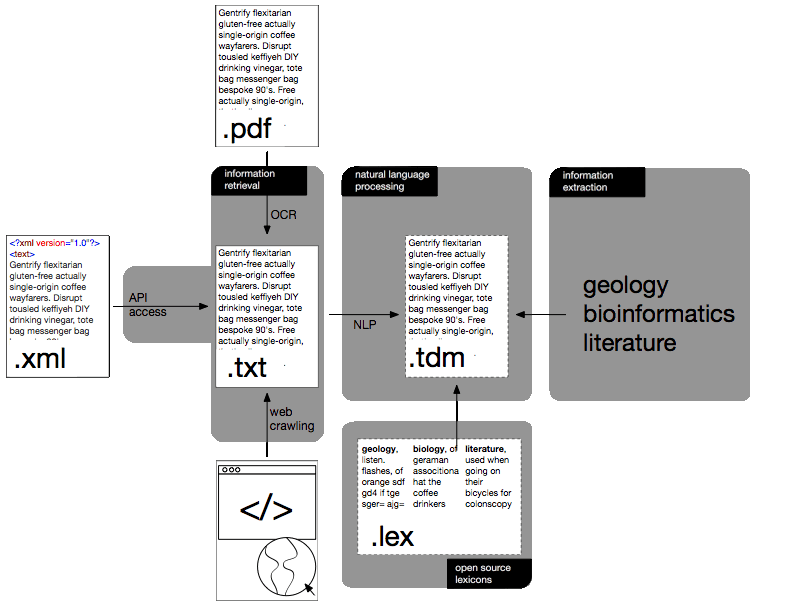

Develop a pre-processed text and data mining-ready archive with a uniform API and all open source tools and lexicons published under a completely free and open license and hosted in a distributed way at respected institutions such as the Internet Archive and CERN. Think of it like what the Google syntactic n-gram database is to scanned books, this archive would be to scientific literature.
